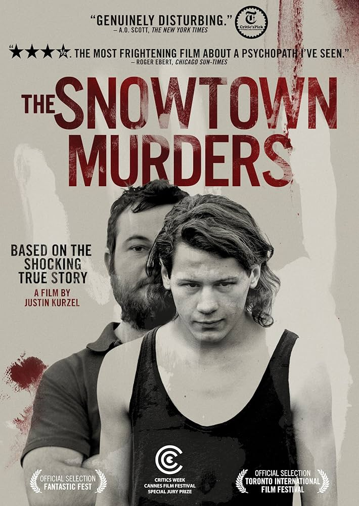

⚠️ Viewer discretion advised. Contains disturbing content based on real events.
The Snowtown murders were a series of murders committed by John Justin Bunting, Robert Joe Wagner, and James Spyridon Vlassakis between August 1992 and May 1999, in and around Adelaide, South Australia. A fourth person, Mark Haydon, was convicted of helping to dispose of the bodies
← Return to Archive